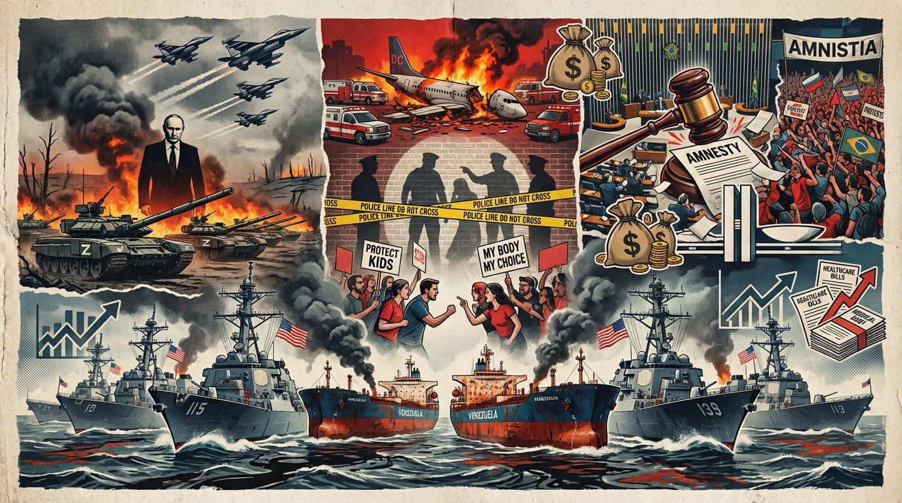

The Daily Globe: US-Venezuela Tensions Escalate Over Oil Tanker Blockade, Trump Bans Gender-Affirming Care for Minors via Executive Order, and Senate Approves 'Dosimetria' Bill as Amnesty for Jan 8 Rioters
Published on 2025-12-19

World
- US-Venezuela Tensions Escalate Over Oil Tanker Blockade
Trump administration imposes blockade on Venezuelan oil tankers claiming reserves; Venezuela calls it an act of war, drawing UN and Latin American criticism for imperialism.
- Russia-Ukraine Conflict Intensifies with Putin Hardline Speech
Putin vows no compromise on historic lands in Ukraine; Ukrainian drones strike Russia amid NATO warnings of direct confrontation if ceasefire fails.
- EU Struggles with Seizing Russian Assets for Ukraine Aid
Belgium proposes joint EU debt using frozen Russian assets; delays and risks highlighted ahead of summit, as Ukraine scrambles for support.
- Australia Tightens Hate Speech Laws After Bondi Terror Attack
Post-shooting measures include social media ban for minors and tougher laws; critics decry free speech curbs amid rising misogyny claims.
USA
- Trump Bans Gender-Affirming Care for Minors via Executive Order
Order restricts transgender healthcare under 18, praised by conservatives for child protection but slammed as discriminatory by advocates.
- US Government Admits Liability in Deadly DC Midair Collision
Failures by Army and air traffic control blamed for crash killing 67; public demands accountability amid aviation safety concerns.
- Brown University Shooting Probe Links to MIT Professor Murder
DNA evidence and person of interest suggest connection; manhunt expands with fears of coordinated violence.
- House GOP Passes Bill Ending ACA Subsidies, Premiums to Rise
Measure slashes Obamacare aid, projecting 40% premium hikes; party rifts as four Republicans break ranks.
- New Epstein Files Photos Reveal High-Profile Connections
House Democrats release images from estate, reigniting conspiracy theories and elite accountability debates.
Brazil
- Senate Approves 'Dosimetria' Bill as Amnesty for Jan 8 Rioters
Sentence reduction law criticized as disguised pardon for coup plotters and Bolsonaro allies; Lula promises veto.
- Lula Administration Hit by INSS Fraud and Other Scandals
Pension scheme theft, Banco Master embezzlement, state firm bankruptcies, and family payments fuel corruption accusations.
- São Paulo FC President Faces Resignation Demands in Chaotic Meeting
Council clashes and fan protests call Casares 'worst president ever'; session ends early for safety.
- EU-Mercosur Trade Deal Sparks Farmer Protests
Brussels clashes over agreement; intersects with US Venezuela threats and domestic economic pressures.
Topic Index
- blockade
- war
- amnesty
- corruption
- transgender
- shooting
- crash
- scandals